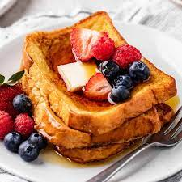

French Toast

Description:
A simple and easy french toast recipe for your delicious breakfast to energize your day.
Estimated time: 20 minutes
Ingredients:
- Bread
- Brown Sugar
- Whole milk
- Salted butter
- Eggs
- Maple Syrup
Steps:
- Whisk the eggs together.
- Whisk the sugar, vanilla and cinnamon into the eggs.
- Pour the ingredient into the whole milk and whisk it together.
- Pour it into a shallow baking baking dish.
- Soak the bread on each side for 10-15 seconds.
- Melt 1/2 tablespoon of salted butter on the griddle or pan to cook the soaked bread. Cook until it turn golden-brown.
- Serve it with maple syrup, whipped cream, fruits and cinnamon honey-butter.